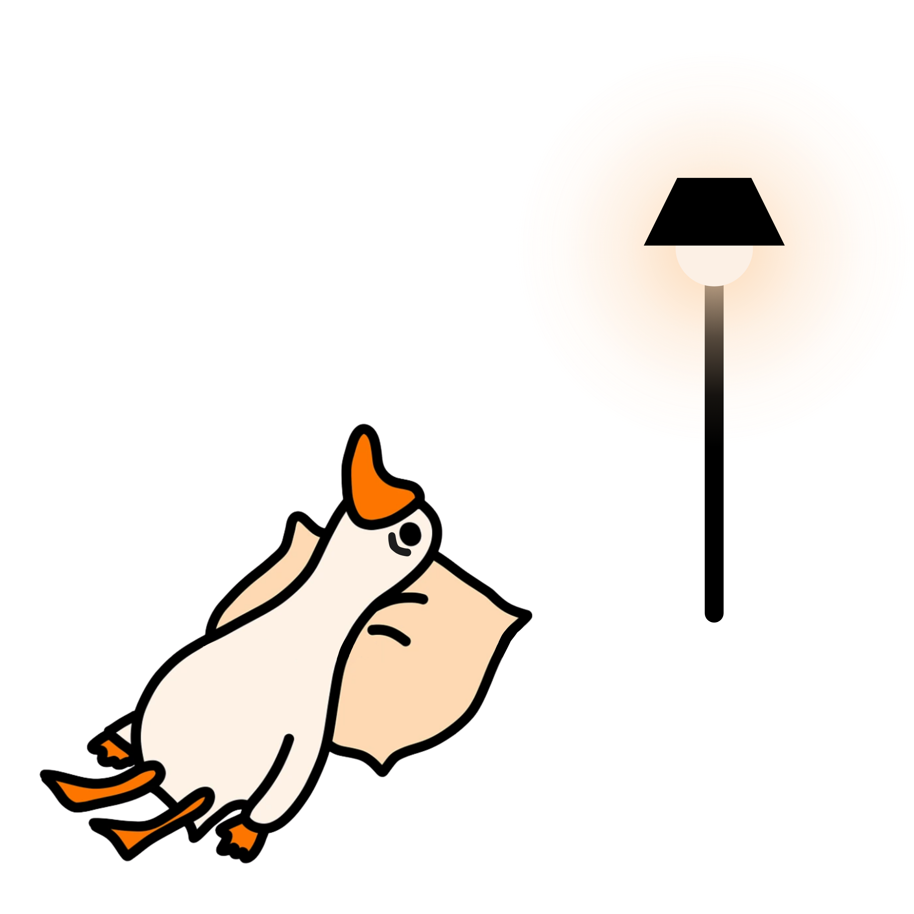

Straight from Gerald's mic
Every night, Gerald logs sound levels outside my window, picks out the loud events, and estimates how much of that noise came from the vehicle itself — separate from the county-wide extrapolations on the home page. Pick a night below to see it.

Loading Gerald's night…
Fetching last night's numbers.
—
vehicle events detected
—
peak isolated dB(A)
—
events over the WHO 45 dB(A) limit
—
average isolated dB(A)
Background trace is Gerald's raw dB(A) reading; dots are isolated vehicle events. Click a dot — or a chip below — to hear the clip.
Click any point on the chart, or a chip above, to see the details for that event.
Sound levels are calibrated against a phone SPL meter (R² = 0.97), not lab equipment — treat the loudest events (75+ dB(A)) as approximate until Gerald is recalibrated with more loud-end reference points. Isolated dB(A) subtracts the ambient background from each event to estimate the vehicle's own contribution. Read the full methodology →